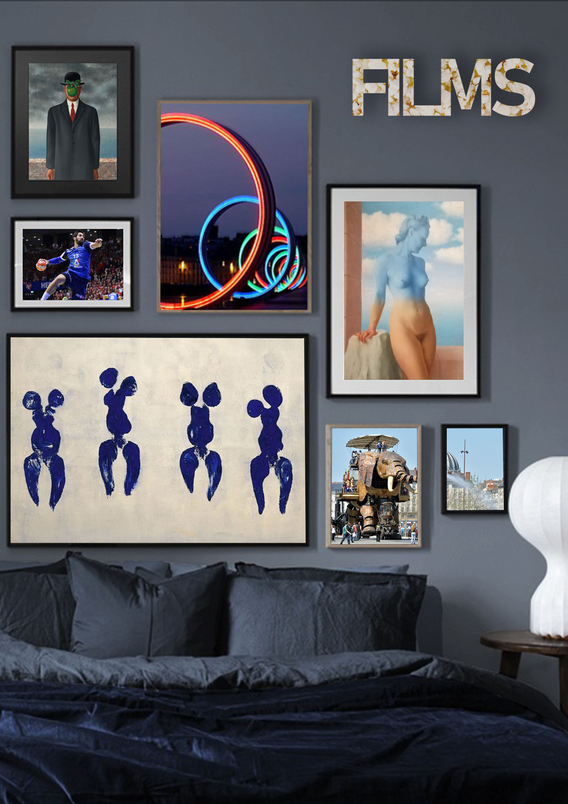
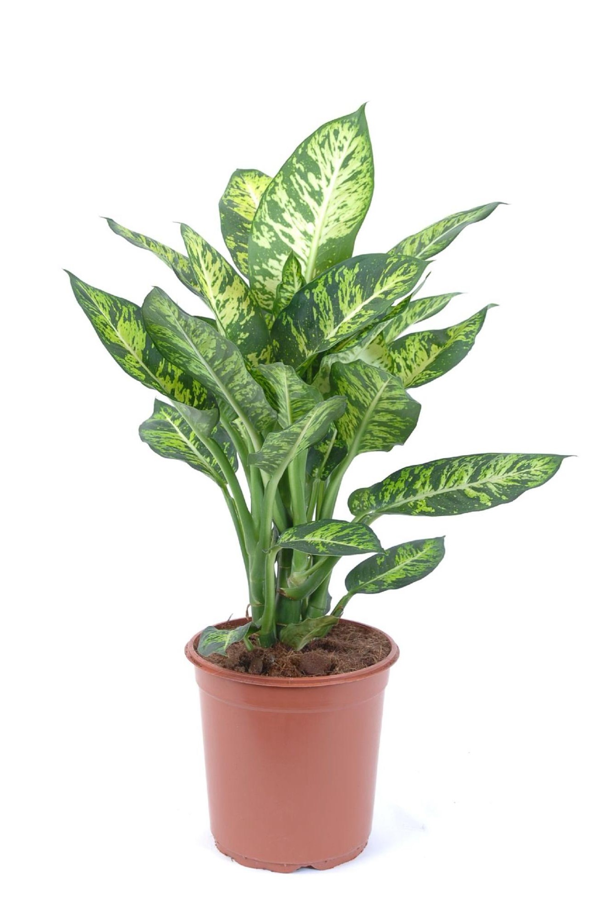
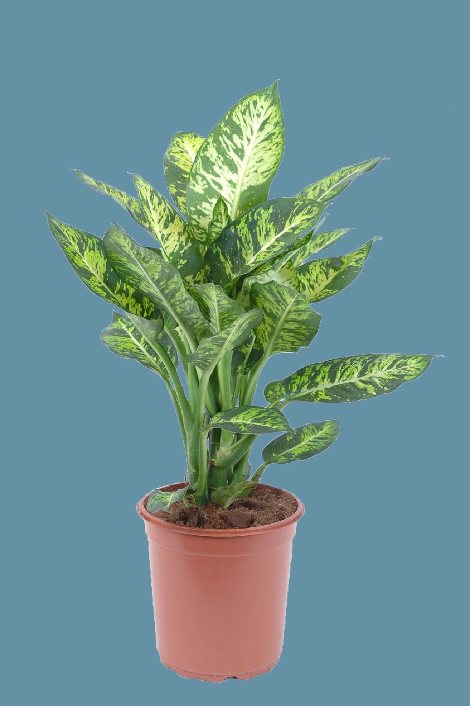
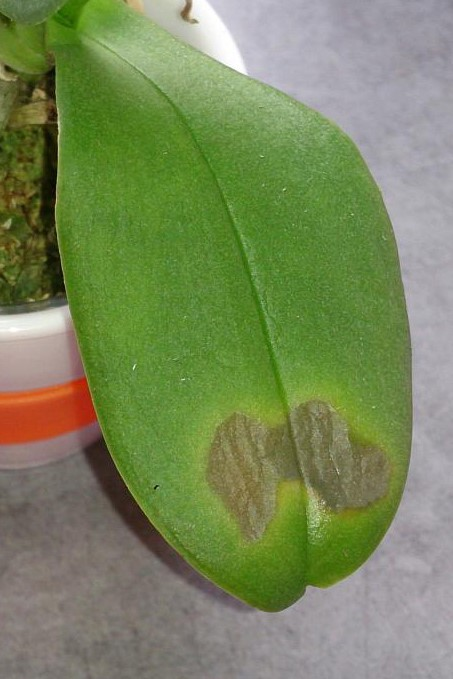
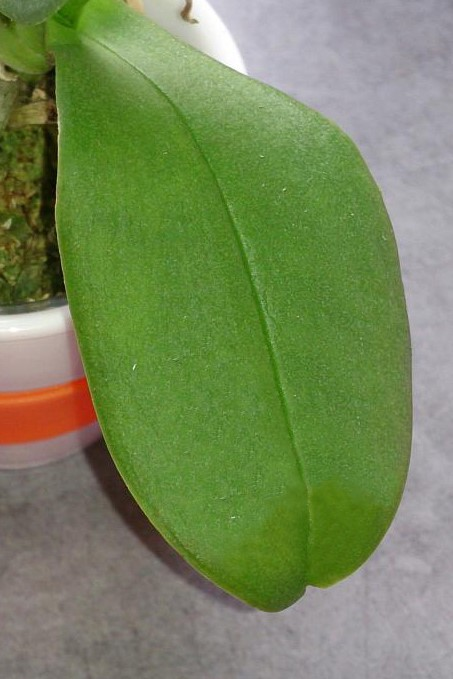

image originale

image détourée

image originale

tampon appliqué
AUTOPORTRAIT
Nous avions comme consigne de réaliser un autoportrait avec le logiciel Photoshop.
Le cahier des charges imposait :
- Un détourage élaboré(soit faisant parti du visuel, soit dans un groupe de calques à part).
- Un écrétage(soit faisant parti du visuel, soit dans un groupe de calques à part).
- Un trucage à l'aide de l'outil Tampon(soit faisant parti du visuel, soit dans un groupe de calques à part).
- Faire apparaitre un mot ou une série de lettres et les utiliser comme élément graphique